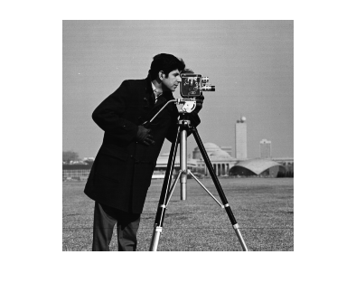
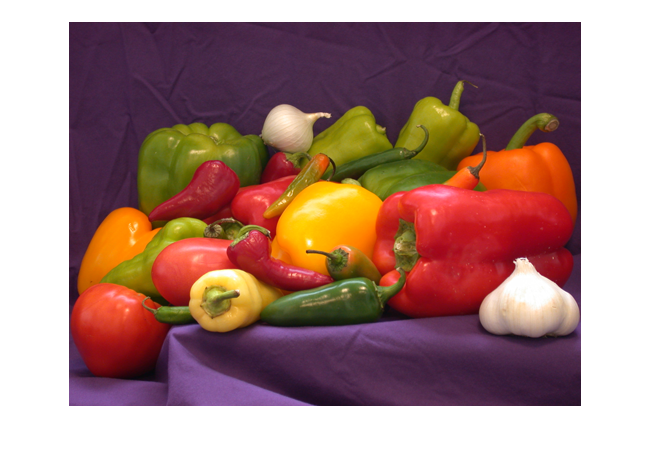

組込みビジョン入門（１）
画像入出力と画素処理(MATLAB)
新潟大学 工学部 電気電子工学科 村松 正吾
Copyright (c), All rights resereved, 2014, Shogo MURAMATSU
Contents
概要
本演習では、MATLAB®にて画像ファイルの情報を読み込む方法のほか、 画像表示、画像ファイル出力、簡単な画素処理について学ぶ。
画像入力
MATLABにおける画像入力は、コマンドプロンプト上にて、 imread 関数にファイル名を指定して実行される。
I = imread('cameraman.tif');
cameraman.tif はグレースケール画像なので、 変数 I は二次元配列として画像データを保持する。
特に指定をしなければ、データ型は符号なし整数８ビット ( uint8 ) となる。
コマンドプロンプト上で、 whos 関数により確認できる。
whos I
Name Size Bytes Class Attributes I 256x256 65536 uint8
なお、Size は '高さ 幅' で表示される。
画像のサイズを知るために、 size 関数を利用することもできる。
size(I)
ans = 256 256
高さのみは、二番目の引数に '1' を指定する。
size(I,1)
ans = 256
幅のみは、二番目の引数に '2' を指定する。
size(I,2)
ans = 256
カラー画像の読込も可能である。
RGB = imread('peppers.png');
変数 RGB は 三次元配列として画像データを保持する。
whos RGB
Name Size Bytes Class Attributes RGB 384x512x3 589824 uint8
各R,G,B成分には、コロン( : )によるインデックス指定を 利用できる。
R = RGB(:,:,1); G = RGB(:,:,2); B = RGB(:,:,3);
各R,G,B成分は、二次元配列となる。
whos R G B
Name Size Bytes Class Attributes B 384x512 196608 uint8 G 384x512 196608 uint8 R 384x512 196608 uint8
画像表示
MATLABにおける画像表示は、コマンドプロンプト上にて、 imshow 関数にファイル名を指定して実行される。
変数 I の表示は以下の通り。
figure(1) imshow(I)
ここで、 figure 関数は画像を出力するウィンドウを 指定している。
変数RGBの表示は以下の通り。
figure(2) imshow(RGB)
カラー画像として表示される。
画素処理
配列に対する演算を施すことで画像処理を実現できる。
カラー画像RGBをグレースケール画像に変換しよう。 rgb2gray 関数を利用すればよい。
I = rgb2gray(RGB);
なお、変数 I が保持していたcameraman.tif の内容は、 peppers.png のグレースケール画像によって上書きされている。
whos I
Name Size Bytes Class Attributes I 384x512 196608 uint8
画像配列に対し、演算を施すために、しばしば実数型への変換が必要となる。
整数型から実数型への変換には、 im2single 関数、もしくは im2double 関数を 利用できる。
I = im2single(I);
whos I
Name Size Bytes Class Attributes I 384x512 786432 single
rgb2gray sqrt .^2
画像出力
imwrite
演習課題
1. 成分別表示(R,G,B)
処理例
2. 色空間変換(hsv2rgb)
処理例